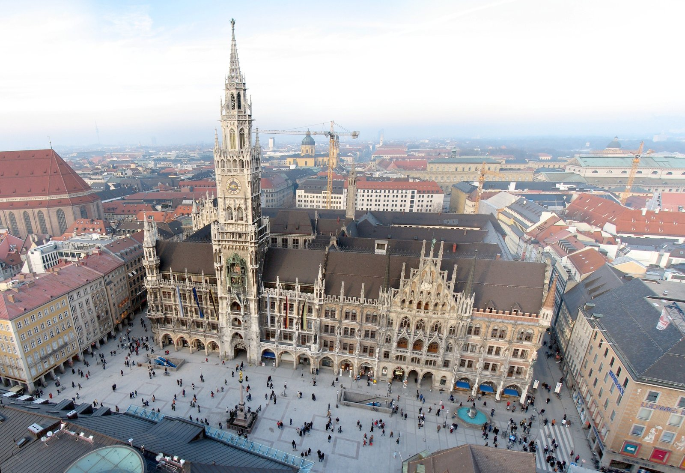
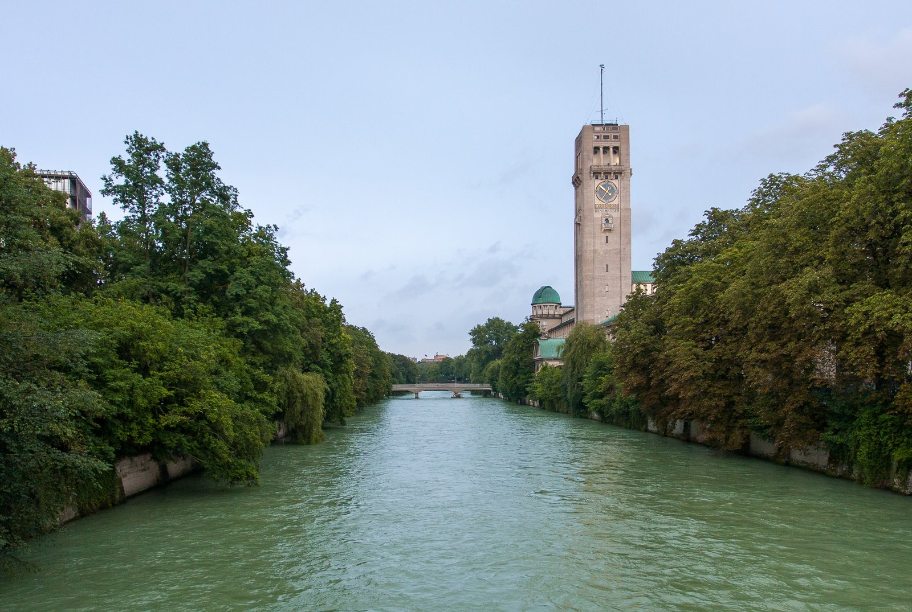
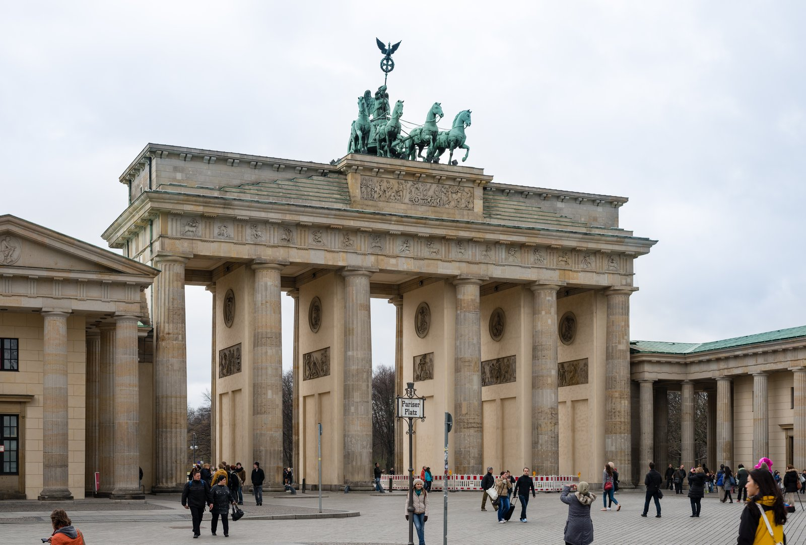
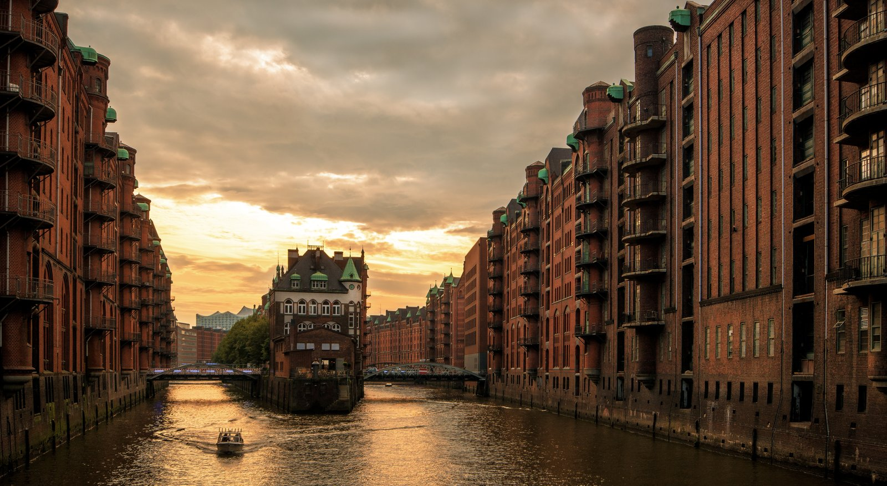
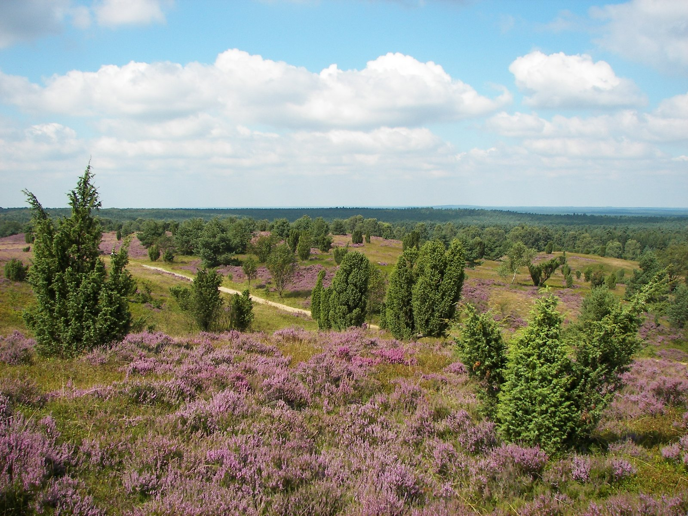
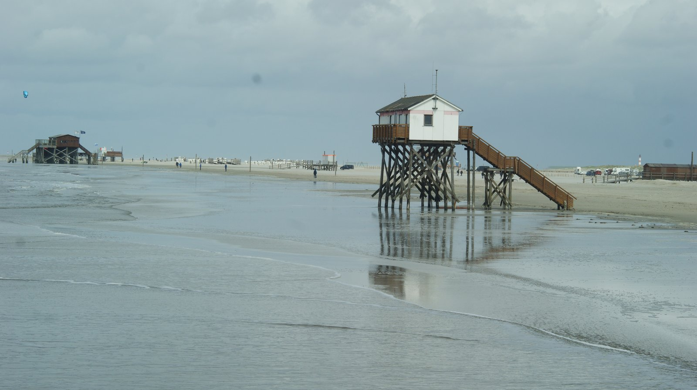
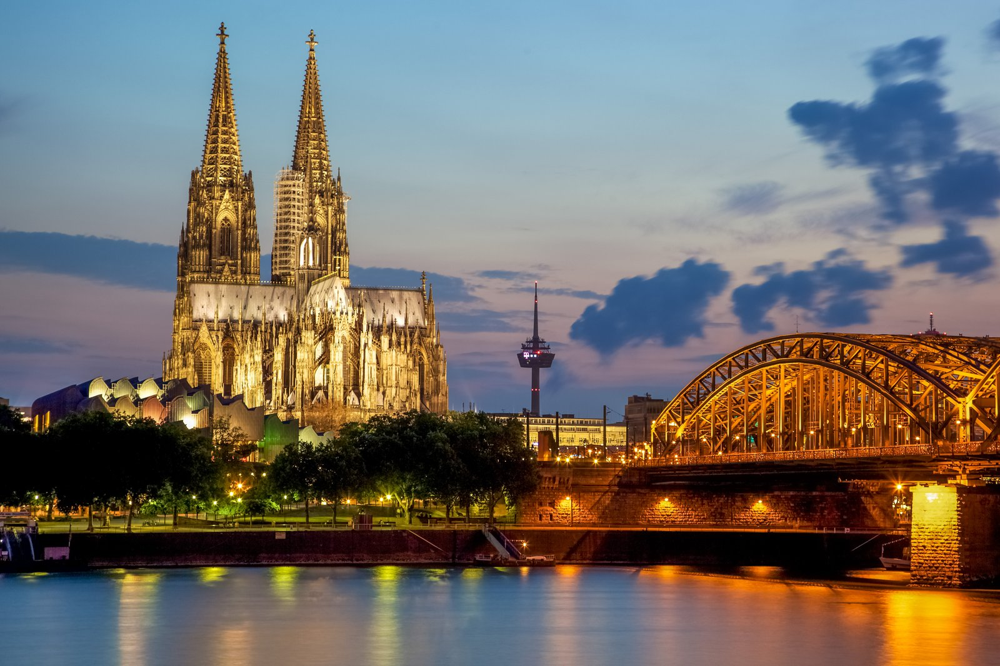
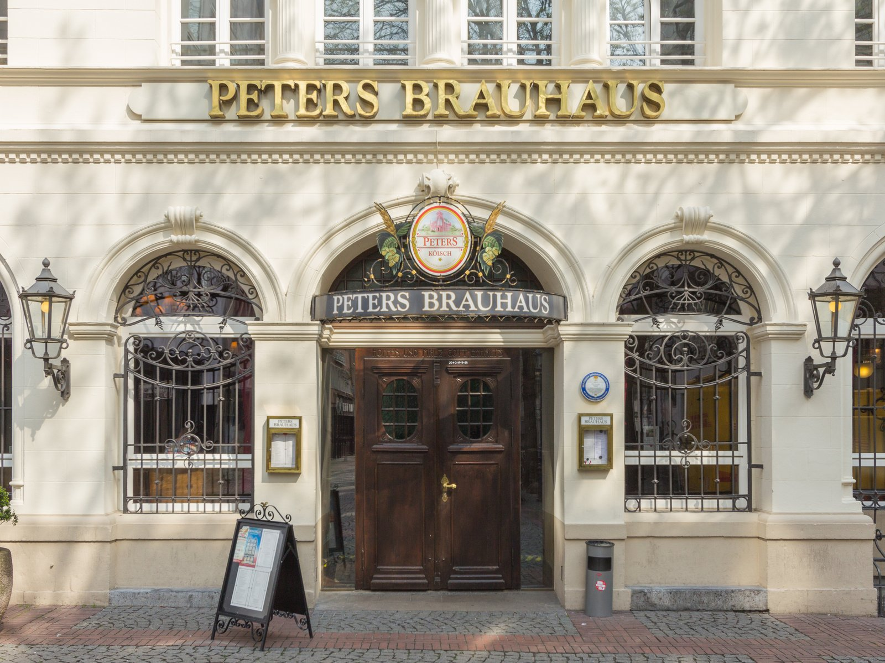

Trip Map 🗺️
Every stop in this guide, plotted at once — zoomed way out from the day-by-day detail below. House pins are where you're sleeping each night; fork-and-knife pins are restaurants and food stops; eye pins are everything else worth seeing. The dashed green line traces the route between home bases, in the order you'll actually travel it.
💡 Tap or click any pin for what it is and a link straight into Google Maps. Pinch or scroll to zoom, drag to pan, and use the button for a fullscreen view. This part of the page needs a connection to load the map tiles — the rest of the guide works fine offline.
Welcome to the Trip 🇩🇪
Two weeks across Germany in May 2027 — Munich, Berlin, Hamburg (with a day trip out to Buchholz and the Lüneburg Heath), the North Sea at St. Peter-Ording, and Cologne, all strung together by train. Built around three things you actually like doing: riding a bike somewhere new, drinking good beer, and eating better sausage than that — on a genuinely frugal $5,000 solo budget, not a padded one.
Nothing here is reserved yet. Dates below assume a sample window (Sat May 8 – Sat May 22, 2027) — swap in your real dates and the train/lodging numbers barely move, since May weekday fares in Germany don't swing much week to week. Lodging picks are strong, bookable candidates, not confirmed reservations — check current prices and availability before you commit. This page is also public on the open web the moment it's published (GitHub Pages), so nothing sensitive lives here beyond the trip itself.
Trip at a Glance 🗓️
Thirteen nights, five home bases, one running theme: bike there, eat well, get back on a train. Full detail for each stop is below this table.
| Day | Date | Base | Headline |
|---|---|---|---|
| Day 0 | Sat 5/8 | In transit | Depart home airport, overnight flight toward Munich |
| Day 1 | Sun 5/9 | Munich | Arrive, ease in — Marienplatz, Viktualienmarkt, early night |
| Day 2 | Mon 5/10 | Munich | Isar Cycle Path ride; English Garden & the Eisbach surf wave |
| Day 3 | Tue 5/11 | Munich | Nymphenburg Palace bike loop; Hofbräuhaus for dinner |
| Day 4 | Wed 5/12 | Berlin | ICE to Berlin (~4h); Brandenburg Gate & Mitte on foot |
| Day 5 | Thu 5/13 | Berlin | Bike ride: Tiergarten → Wannsee (28 km) |
| Day 6 | Fri 5/14 | Berlin | Berlin Wall Trail segment & Mauerpark; currywurst crawl |
| Day 7 | Sat 5/15 | Hamburg | ICE to Hamburg (~1h45); Speicherstadt & HafenCity by bike |
| Day 8 | Sun 5/16 | Hamburg | Alster lakes bike loop; Sunday Fischmarkt at dawn |
| Day 9 | Mon 5/17 | Hamburg | Day trip: Buchholz & the Lüneburg Heath by bike |
| Day 10 | Tue 5/18 | St. Peter-Ording | Regional train via Husum (~2.5h); beach & Deichradweg ride |
| Day 11 | Wed 5/19 | St. Peter-Ording | Guided Wattwanderung mudflat hike; Eiderstedt bike loop |
| Day 12 | Thu 5/20 | Cologne | Train via Hamburg (~6h); Altstadt & Kölsch at Früh am Dom |
| Day 13 | Fri 5/21 | Cologne | Cathedral climb; Rhine promenade bike ride |
| Day 14 | Sat 5/22 | Home | Train to Frankfurt (~1h); fly home |
Budget Breakdown 💶
Solo, frugal, budget-hotel-and-guesthouse lodging throughout. Figures are per-person totals for the whole 13-night trip, in euros and rough dollars (assuming roughly 1:1.08).
| Category | Estimate (EUR) | Estimate (USD) | Notes |
|---|---|---|---|
| Round-trip flight | — | $850–1,050 | DFW open-jaw: nonstop into Munich (MUC), nonstop home from Frankfurt (FRA) — see Getting There below |
| Long-distance trains (Sparpreis) | €150–230 | $165–250 | 5 ICE legs, booked as soon as dates are fixed |
| Deutschlandticket (1 month) | €58 | $65 | Covers every city's transit + the two regional (non-ICE) legs — see below |
| Bike rentals | €120–150 | $130–165 | City bike-share days + St. Peter-Ording & heath rental shops |
| Lodging (13 nights) | €850–950 | $920–1,030 | Budget hotels/guesthouses, see each city section |
| Food & drink | €500–650 | $540–700 | ~€40–50/day — street food lunches, one brauhaus dinner most nights |
| Activities & entries | €150–200 | $165–220 | Cathedral climbs, guided Wattwanderung, Kiekeberg museum, misc. |
| E-scooters & incidentals | €80–120 | $85–130 | Tier/Bolt/Lime for the odd late-night or rainy hop |
| Subtotal | ~$2,920–3,610 | ||
| Buffer against $5,000 | ~$1,390–2,080 | Room for a Neuschwanstein day tour, a nicer dinner, or just not stressing about it |
Traveling frugally doesn't mean spending every dollar of the $5,000 — this plan comes in well under it on purpose. The leftover ~$1,390–2,080 is a cushion for flight-price reality (May fares move), a splurge dinner or two, or an add-on day trip (Neuschwanstein Castle from Munich is a classic one, ~€60–90 round trip by regional train + bus) — not a target to hit.
Getting There & Getting Around 🚆
You said you like riding trains, planes, bikes, and scooters — good news, this trip runs on exactly that stack. Here's how the pieces fit together.
Flights ✈️
Fly open-jaw out of DFW: into Munich (MUC), home from Frankfurt (FRA) — never backtrack across the country to catch your original arrival airport. DFW is genuinely well-placed for this exact shape of trip — it's one of the few U.S. airports with nonstop service on both ends: Lufthansa/SWISS fly DFW–MUC direct, and American Airlines flies DFW–FRA direct year-round (7x weekly, ~9h40m, 787 Dreamliner, out of Terminal D), so this open-jaw needs zero connections in either direction. Round-trip DFW–MUC fares were pricing around $800–830 in current searches (Orbitz, Lufthansa), and DFW–FRA one-ways on American were showing around $430–435 (Expedia) — together, budget roughly $850–1,050 for the DFW–MUC / FRA–DFW open-jaw. May 2027 fares aren't loaded on booking sites yet — search closer to the date (ideally 4–6 months out) on Google Flights or ITA Matrix with flexible dates, and price the open-jaw combination directly rather than two separate one-ways.
Long-distance trains 🚄
Deutsche Bahn's Sparpreis fares (from ~€20–45 per leg for routes this length) are released roughly 6 months ahead and only get more expensive as the date nears or the cheapest allotment sells out — book every long-distance leg the moment your dates are final. Sparpreis tickets are non-refundable but can be changed once for a small fee; the pricier flexible Flexpreis isn't worth it for a fixed itinerary like this one.
| Leg | Duration | Approx. Sparpreis |
|---|---|---|
| Munich → Berlin | ~4h (ICE) | €25–45 |
| Berlin → Hamburg | ~1h45 (ICE) | €20–35 |
| Hamburg → Buchholz (round trip) | ~30 min each way (RE) | €10–15 (covered by Deutschlandticket) |
| Hamburg → St. Peter-Ording | ~2h30, 1 change at Husum (RE) | €15–25 (covered by Deutschlandticket) |
| St. Peter-Ording → Cologne | ~6h via Hamburg (RE + ICE) | €45–70 |
| Cologne → Frankfurt Airport | ~1h (ICE) | €20–30 |
Buy one Deutschlandticket (€58, valid a full calendar month) the day you land. It's unlimited nationwide on every regional (RE/RB) train, plus every city's U-Bahn/S-Bahn/bus/tram and bike-share unlock — it just doesn't cover ICE/IC long-distance trains. That means it replaces separate day-transit-tickets in Munich, Berlin, Hamburg, and Cologne and covers the two regional legs above (Buchholz and St. Peter-Ording) for free — only the four true ICE legs need a separate Sparpreis ticket.
Bikes & scooters 🚲
Every city on this trip has a bike-share network — Munich and Berlin run Call a Bike/Nextbike, Hamburg runs its own StadtRAD (first 30 minutes free, a genuinely good deal for short hops), Cologne runs KVB-Rad. Day passes run roughly €10–15 where a flat free window doesn't apply. St. Peter-Ording and the Lüneburg Heath around Buchholz don't have bike-share — rent from a shop at the train station or in town, ~€12–18/day. Tier, Bolt, and Lime e-scooters are all over every city here (~€1 unlock + ~€0.20/min) for the odd late-night or rain-shortcut hop.
May in Germany averages 50–65°F (10–18°C) inland, with the North Sea coast at St. Peter-Ording running a few degrees cooler and noticeably windier — pack real layers and a windproof/rain shell, not just a light jacket. Bring a bike-friendly daypack and a phone mount if you have one; Deutsche Bahn's app + Google Maps cover navigation offline once routes are cached.
Munich — Bavaria's Beer-Garden Capital 🍺
Three nights to shake off jet lag the right way: slow mornings, an Isar-side bike ride, and beer gardens instead of nightlife. Munich is compact and almost entirely flat along the river, which makes it the easiest city on this trip to get around by bike from day one.

Where to stay
MEININGER Hotel München Zentrum — a budget hotel/hostel hybrid chain with private en-suite doubles, right by the Hauptbahnhof (main station), which makes the Day 4 train to Berlin a five-minute walk instead of a taxi. Expect roughly €75–95/night for a private double. (map)
Bike rides
The Isar Cycle Path runs flat along the river for roughly 150 km in each direction from the city center — you only need a fraction of that. Head south from the center through the Flaucher riverside meadows toward Schäftlarn Monastery for an easy 20–30 km round trip, mostly car-free and shaded. Inside the city, the English Garden is one of the largest urban parks in the world — ride its main paths (dismount near the Eisbach, where surfers ride a standing river wave right in the middle of the park, worth stopping to watch) and loop out toward Nymphenburg Palace along its formal canal for a quieter, flatter ride. (map)

Eat & drink
Hofbräuhaus — yes, it's the touristy one, but it's touristy for a reason: cavernous, loud, live oompah music, and a proper Weisswurst-and-pretzel plate. Go once. (map)
Augustiner-Keller — the beer garden locals actually go to, with a self-serve area (bring your own food if you want, order beer at the stand) that's the cheapest way to drink well in this city. (map)
Viktualienmarkt — a permanent open-air market a block from Marienplatz; cheap Bratwurst stalls, produce, and a beer garden of its own in the middle. Good spot for an easy lunch between sights. (map)
Berlin — History on Two Wheels 🏛️
Berlin is enormous and almost entirely flat, which is exactly why so much of it is best seen by bike. Three nights here covers the Mitte core on foot and two very different bike routes — one toward the lakes, one along Cold War history.

Where to stay
MEININGER Hotel Berlin East Side Gallery — private double rooms right next to the longest surviving stretch of the Berlin Wall, in Friedrichshain — puts you within walking distance of one end of the Wall Trail ride and a short U-Bahn hop from Mitte. Roughly €65–85/night. (map)
Bike rides
Tiergarten → Wannsee (28 km) — starts at Schloßplatz in Mitte, cuts through Gendarmenmarkt and past Checkpoint Charlie, then opens up into Tiergarten (Berlin's huge central park) before running all the way south to Wannsee and the Glienicker Brücke — the Cold War "Bridge of Spies" where East and West traded captured agents. Wannsee itself has Europe's largest public lake beach, a good spot to stop, swim, and eat before turning back or taking the S-Bahn home. (map)
Berlin Wall Trail (Mauerweg) — a marked 160 km loop tracing the former border in full, done in stages by most riders. You don't need the whole thing: ride the segment from the East Side Gallery north through Mauerpark (Sunday flea market and karaoke-in-the-amphitheater if your dates line up) for a shorter, history-dense couple of hours. (map)
Eat & drink
Curry 36 — one of Berlin's most-cited currywurst stands, open late, cheap, and always busy — the city's signature street food and a good cap to a long ride. (map)
Konnopke's Imbiss — a Prenzlauer Berg institution under the elevated U-Bahn tracks, currywurst since 1930 (East Berlin's version survived the Wall years right here). (map)
Hamburg & the Lüneburg Heath — Harbor City to Heather Country ⚓
Hamburg is Germany's flattest major city and its best-organized for cycling — hardly a hill anywhere, a huge bike-lane network, and a free-for-30-minutes bike-share system. Three nights here: two in the city, one built around the day trip out to Buchholz and the Lüneburg Heath.

Where to stay
MEININGER Hotel Hamburg City Center — private doubles a short ride from both the Hauptbahnhof and the Alster lakes, roughly €70–90/night. (map)
Bike rides & things to do in the city
Grab a StadtRAD bike (first 30 minutes free — plan short hops, not one long rental) and loop the Alster lakes — a flat, scenic ~7.5 km circuit around the Binnenalster and Außenalster right in the city center, popular with locals on any nice evening. Separately, ride down to Speicherstadt and HafenCity along the Elbe, and don't skip the Old Elbe Tunnel — a century-old pedestrian/bike tunnel under the river with harbor views on the far side. (map)
If your dates land on a Sunday, the Fischmarkt (fish market) starts at 5 a.m. and runs to 9:30, with a live band in the old Fischauktionshalle — a genuinely fun, very Hamburg way to start a day, fish sandwich in hand. (map)
Day trip: Buchholz & the Lüneburg Heath
Buchholz in der Nordheide sits about 30 minutes south of Hamburg by regional train (covered by the Deutschlandticket) and is the easiest gateway into the Lüneburg Heath — rolling heathland known for its purple bloom in late summer, but genuinely beautiful in May too: open moor, pine forest, and grazing Heidschnucke sheep. Rent a bike in Buchholz and ride out to Wilseder Berg (169 m, the heath's highest point — cars are banned in its core, so the last stretch is bike/foot/horse-cart only) for a 360° view that reaches Hamburg on a clear day, or the slightly quieter Brunsberg summit for the same payoff with fewer people. On the way back into town, the Kiekeberg open-air museum is worth an hour — reconstructed 19th-century farm buildings and craft demonstrations. (map)

Eat & drink
A Fischbrötchen (fish sandwich — pickled herring or fried fish in a bread roll) from any Fischmarkt stall is the defining Hamburg cheap eat. In town, look for a straightforward Fischbude (fish shack) rather than a sit-down restaurant to keep it frugal and authentic.
St. Peter-Ording — The North Sea 🌊
Two nights on the Schleswig-Holstein coast, reached by regional train via Husum (covered by the Deutschlandticket). St. Peter-Ording is a mainland resort with a famously wide beach — up to a kilometer of tidal flat before you reach open water — laced with a dedicated bike/boardwalk network and framed by the Wadden Sea, a UNESCO World Heritage tidal ecosystem.

Where to stay
St. Peter-Ording is a small resort town with no chain-hostel presence — instead, filter Booking.com for a budget Pension or Ferienwohnung (guest house / holiday apartment) in the Bad or Ording districts, both walkable to the beach and the Deichradweg. Expect roughly €60–80/night for a simple private room — book early, since May is shoulder season heading into the busy summer months and small-town inventory is limited.
Bike rides & the mudflat hike
Book a guided Wattwanderung (mudflat walk) in advance — the tide moves fast and unpredictably across the flats, so this genuinely isn't a solo-explore activity. Guided walks run a few hours, start from the Bad district, and typically cost around €15–20 per person. Save the bike for the afternoon: the Deichradweg runs along the top of the dike with open views over the salt marsh and Wadden Sea, and a longer loop out onto the Eiderstedt Peninsula covers pine forest, marshland, and small villages if you want more distance. (map)
Eat & drink
Fischbude stalls along the beach promenade sell the local specialty — a Krabbenbrötchen (North Sea shrimp roll) — for a few euros, the natural lunch here every day.
Cologne — Cathedral, Rhine & Kölsch 🍻
The last stop, and the shortest — one night, one full day. Cologne's Altstadt is small enough to see on foot, its Rhine promenade is flat and made for an easy bike ride, and its beer culture is unlike anywhere else in Germany: Kölsch is a protected style, brewed only within about 50 km of the city, and served exclusively in small 200ml glasses called Stangen.

Where to stay
MEININGER Hotel Köln West — private doubles at the frugal end of the chain's pricing, roughly €55–75/night; it's in Junkersdorf, a bit outside the Altstadt but directly on a tram line into the center in about 15 minutes. (map)
Things to do & the bike ride
Cologne Cathedral — free to enter the nave; climbing the 533 steps of the south tower costs around €12 (as of mid-2026 pricing) for a rooftop view over the Rhine and the whole Altstadt. Afterward, the Rhine promenade is flat and pleasant on both banks between the Cathedral and Rheinauhafen — an easy, low-key bike ride to close out the trip, cathedral spires in view most of the way. (map)
Eat & drink
Früh am Dom — the most tourist-friendly Brauhaus in the city, literally steps from the Cathedral, multilingual staff, and a roaming Köbes (waiter) who keeps bringing fresh Stangen until you put a coaster on top of your glass to signal "enough." Order a Halve Hahn (despite the name, not chicken — a rye roll with aged Gouda, mustard, and pickle) alongside. (map)

Brauerei zur Malzmühle — quieter, more local, fewer tourists, in Altstadt-Süd — a good pick if you want the same Kölsch-and-Brauhaus experience without the crowd right at the Cathedral. (map)
Glossary
| Term | Definition |
|---|---|
| Altstadt | "Old town" — the historic core of a German city, usually the most walkable, tourist-dense district. |
| Brauhaus | A traditional beer hall, usually attached to (or historically brewing) its own beer — the standard venue for Kölsch in Cologne or Weissbier in Munich. |
| Currywurst | Sliced sausage in curry-spiced ketchup, Berlin's signature street food since the postwar era. |
| Deichradweg | A bike path running along the top of a coastal dike (Deich) — common on the North Sea coast, offering flat, open, wind-exposed riding. |
| Deutschlandticket | A €58/month nationwide transit pass covering all regional (RE/RB) trains and every city's local public transit (U-Bahn, S-Bahn, bus, tram) — does not cover ICE/IC long-distance trains. |
| Fischbrötchen | A fish sandwich — fried or pickled fish in a bread roll — the classic cheap eat of Germany's northern coast. |
| Hauptbahnhof | "Main station" — the primary train station of a German city, usually abbreviated Hbf. |
| ICE | Intercity-Express — Deutsche Bahn's high-speed long-distance train, used for the Munich–Berlin–Hamburg–Cologne–Frankfurt legs of this trip. |
| Kölsch | A light, pale beer style with EU-protected geographic status — legally brewable only within about 50 km of Cologne, served in small 200ml glasses. |
| Krabbenbrötchen | A North Sea shrimp roll — the St. Peter-Ording equivalent of Hamburg's Fischbrötchen. |
| Open-jaw flight | A round trip that arrives in one city and departs from another (e.g. into Munich, home from Frankfurt), avoiding a backtrack to the original arrival airport. |
| RE / RB | Regional-Express / Regionalbahn — Deutsche Bahn's slower regional trains, covered by the Deutschlandticket, used for the Buchholz and St. Peter-Ording legs of this trip. |
| Sparpreis | Deutsche Bahn's discounted advance-purchase long-distance fare — cheapest booked early, non-refundable but changeable once for a fee. |
| Stange | The small (200ml) cylindrical glass Kölsch is traditionally served in — a full glass arrives unprompted until you cover it with a coaster. |
| Wattwanderung | A guided walk out onto the Wadden Sea's exposed tidal mudflats at low tide — should always be done with a licensed guide due to fast-changing tides. |